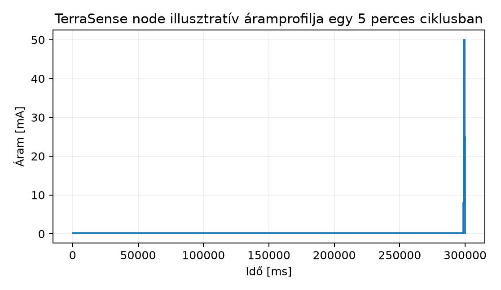
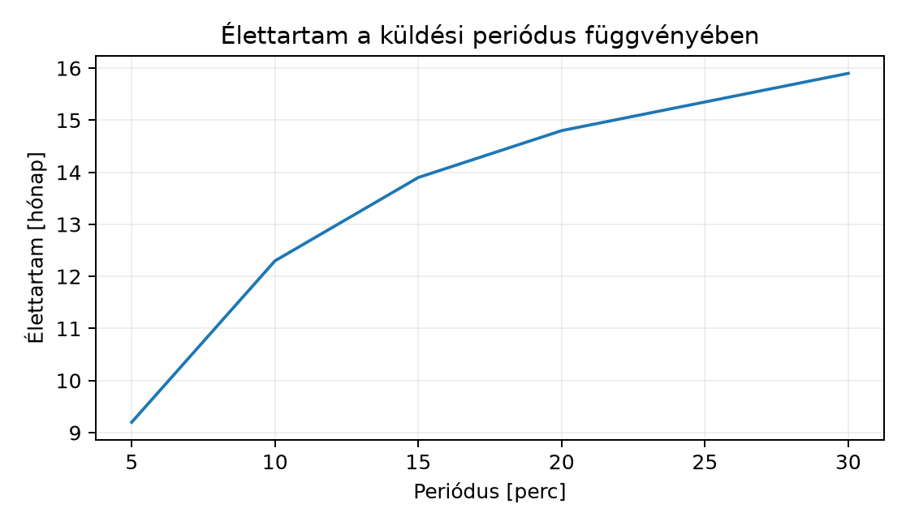

A TerraSense üvegházban a talajnedvesség- és klímaszenzorok elemes
csomópontok, amelyeket a termelő nem akar havonta cserélni. A nem funkcionális követelmények között rögzítettük,
hogy a ts-node eszközöknek legalább 12 hónapig kell
működniük egyetlen elemszettel. Ha ezt a számot rosszul becsüljük, akkor
a terepre telepített eszközök idő előtt elnémulnak, és a karbantartás
költsége felemészti a rendszer előnyeit.
Az energiafogyasztást nem elég egyetlen pillanatban megmérni. Az IoT-csomópontok tipikusan rövid aktív fázisokból és hosszú alvó fázisokból álló ciklusokban működnek, ezért az átlagos áramfelvétel a különböző állapotok áramából és időtartamából kiindulva számítható. Ebben az alfejezetben felépítjük ezt a duty-cycle energiamodellt, kiszámítjuk a TerraSense csomópont élettartamát, és megvizsgáljuk, melyik fogyasztási tétel csökkentése éri meg leginkább.
A rádiós szenzorcsomópont munkaciklusa olyan állapotok sorozatára bontható, amelyek rendre ismétlődnek. A leggyakoribb állapotok:
Definíció (munkaciklus, duty cycle). A munkaciklus az aktív (nem alvó) idő aránya a teljes ciklusidőhöz képest:
ahol a ciklusidő, pedig az egyes aktív állapotok időtartama. Az IoT-eszközök gyakran értékkel dolgoznak, például egy 5 percenként 1 másodpercig adó csomópont esetén .
Definíció (állapotok áramfelvétele). Egy vezeték nélküli szenzorcsomópont jellemző fogyasztási állapotai:
Ezek az értékek nagyságrendi becslések, amelyek a konkrét mikrovezérlő és rádió adatlapjából ellenőrizendők.
A teljes ciklusidő az egyes állapotidők összege:
Az átlagáram a súlyozott középérték:
Legyen a ciklus állapotból álló sorozat, ahol az -adik állapotban az eszköz áramot vesz fel ideig. A ciklus alatt elfogyasztott töltés:
Ezt a ciklusidővel elosztva kapjuk az átlagáramot:
Ha az elem hasznos kapacitása (mAh), akkor a várható élettartam órában:
ahol mA-ben adott. Az élettartam hónapban, ha egy hónapot 30 nappal, egy napot 24 órával számolunk:
Az önkisülést kétféleképpen vehetjük figyelembe. Az egyszerűbb módszer a névleges kapacitást csökkenti egy biztonsági tényezővel: például egy 2500 mAh névleges kapacitású elemnél 20% tartalék levonásával mAh-val számolunk. A pontosabb modell az önkisülést ekvivalens szivárgási áramként adja hozzá az átlagáramhoz:
ahol az elem kémiai önkisüléséből származó folyamatos veszteség (pl. évi 2% kapacitásveszteség egy 2000 mAh elemnél µA ekvivalens áram). A továbbiakban a kapacitástartalékos módszert használjuk, mert az könnyebben kezelhető a gyakorlatban.
Az áramfelvétel időben nem folytonos, hanem lépcsős függvény. Az alábbi ábra egy TerraSense-csomópont egyetlen ciklusának illusztratív áramprofilját mutatja.

Az ábrán az időtengely a ciklus végétől visszafelé mutatja az aktív szakaszokat: az eszköz az első 298,6 másodpercben (298600 ms) alszik 0,15 mA-rel, majd 400 ms-ig mér 8 mA-rel, 700 ms-ig ad 50 mA-rel, végül 300 ms-ig vétel üzemmódban van 25 mA-rel. A lépcsők magassága az állapotra jellemző áram, a szélessége az állapot időtartama; a lépcsők alatti terület a ciklus alatt elfogyasztott töltés.
A domináns fogyasztási tag meghatározásához nem elég az áramértékeket nézni, az időtartamokkal súlyozott töltést kell összevetni. Az alábbi táblázat a TerraSense csomópont három állapotát hasonlítja össze.
| Állapot | Áram (mA) | Időtartam (s) | Töltés (mA·s) | Részesedés |
|---|---|---|---|---|
| Alvás | 0,15 | 298,6 | 44,79 | 49,5% |
| Mérés | 8 | 0,4 | 3,20 | 3,5% |
| Rádió TX | 50 | 0,7 | 35,00 | 38,7% |
| Rádió RX | 25 | 0,3 | 7,50 | 8,3% |
| Összesen | – | 300 | 90,49 | 100% |
A táblázatból látható, hogy a legnagyobb áramú TX állapot csak a második legnagyobb tétel, mert az alvási szakasz hosszú időtartama miatt a kicsi alvási áram is jelentős töltést fogyaszt. Ezért a gyakorlatban gyakran az alvási áram csökkentése (például mélyebb alvó üzemmód, perifériák lekapcsolása) éppolyan fontos, mint a rádió adásidejének rövidítése.
Kompromisszumok és tervezési döntések:
A következő számításban a ts-node csomópont egy
lehetséges, illusztratív paraméterkészletét használjuk. Az értékeket a
kiválasztott mikrovezérlő és rádió adatlapjából kell ellenőrizni, de a
nagyságrendek tipikusak.
Feltételezett állapotok és paraméterek:
A ciklusidő perc = 300 s. Az alvási idő:
A ciklus alatt elfogyasztott töltés:
Az átlagáram:
Az élettartam hónapban:
Ez nem éri el a 12 hónapos követelményt.
A ciklusidő perc = 600 s. Az alvási idő:
A töltés:
Az átlagáram:
Az élettartam:
A 10 perces telemetriai ciklussal a csomópont éppen túllépi a 12 hónapos követelményt. Ez az eredmény megerősíti a Nem funkcionális követelmények: energia, költség, élettartam, megbízhatóság, biztonság követelménytáblázatában rögzített 10 perces ciklust.
Az alábbi ábra az élettartam alakulását mutatja a küldési periódus függvényében, változatlan aktív állapotidők mellett.

A görbe ellaposodik: minél ritkább a küldés, annál inkább az alvási áram dominál, és a periódus további növelése egyre kevesebb élettartam-növekedést hoz. 5 percről 10 percre váltva közel 3 hónappal nő az élettartam, 20 percről 30 percre váltva viszont már csak alig több mint 1 hónappal.
Továbbvitt eredmény. A fenti paramétereket és a 10
perces periódust rögzítjük a
~/iot-labor/i016/energy-model.md fájlban. Ezt a modellt
használja az Alvómódok és energiatakarékos
szoftvertervezés alfejezet az alvási állapotok finomításakor, a Rádiós technológiák összevetése alfejezet a rádió
kiválasztásakor, és a LoRaWAN: nagy hatótáv kis
energiával alfejezet a LoRa adás energiaigényének becslésekor. A
fájl tartalma:
# TerraSense ts-node energiamodell (i016)
Periódus: 600 s (10 perc)
Állapotok:
alvás: 0,15 mA, idő: 598,6 s
mérés: 8 mA, idő: 0,4 s
rádió TX: 50 mA, idő: 0,7 s
rádió RX: 25 mA, idő: 0,3 s
Átlagáram: 0,2258 mA
Elem hasznos kapacitás: 2000 mAh
Számított élettartam: 12,3 hónap
Megjegyzés: az áramértékek illusztratívak, a választott hardver adatlapjából ellenőrizendők.A számított élettartam csak annyira pontos, amennyire az állapotidők és az áramértékek helyesek. A valós hardveren végzett méréshez az alábbi eszközök használhatók:
A native_sim környezet nem modellezi a valós hardver
energiafogyasztását, ezért az energiamérést mindig valós
fejlesztőkártyán vagy célhardveren kell elvégezni. A mérési összeállítás
pontossága és az eszközök specifikációja ellenőrizendő.
| Hibatünet | Lehetséges ok | Javítás |
|---|---|---|
| A mért élettartam lényegesen rövidebb | Rossz állapotidő (pl. a rádió inicializálása hosszabb) | Oszcilloszkóppal mérje meg a tényleges időket, és frissítse a modellt |
| A számított átlagáram alacsonyabb a mértnél | Elhanyagolt perifériák (pl. LED, szenzor fűtése) | Azonosítsa az összes fogyasztót, és vegye fel az állapotok közé |
| Az élettartam nem lineárisan nő a periódussal | Az alvási áram dominál, a rádióhatás kicsi | Csökkentse az alvási áramot vagy a rádió vételi ablakát |
| Az elem kapacitása idő előtt elfogy | Önkisülés vagy hőmérsékletfüggő kapacitáscsökkenés | Használjon nagyobb tartalékot, és mérje a hőmérsékleti profilt |
Csak az aktív áramot nézik, az alvási áramot elhanyagolják. A fenti példában az alvási állapot adja a töltés felét, annak ellenére, hogy árama három nagyságrenddel kisebb a TX-áramnál. A hosszú időtartam miatt a kis alvási áram is domináns lehet.
Az önkisülést figyelmen kívül hagyják. Egy 2500 mAh névleges kapacitású elem évek alatt önkisüléssel is veszít kapacitásából. Ha a csomópontot 10 évre tervezik, az önkisülés akár nagyobb is lehet, mint a hasznos fogyasztás.
A periódusidőt és az állapotidőket különböző mértékegységben adják meg. Ha a periódus másodpercben, az állapotidőket pedig milliszekundumban számolják, az átlagáram több nagyságrenddel téves lesz. Ügyelni kell az egységes másodperc- vagy óra-alapú számításra.
A rádió RX ablakát túl hosszúra veszik. Az eszközök gyakran hosszú vételi ablakot nyitnak a parancsok fogadására, de ez az energiafogyasztás jelentős forrása. A vételi ablakot a parancs-késleltetési követelmény és az energiafogyasztás közötti kompromisszumként kell megválasztani.
Miért nem elegendő a csúcsáram ismerete az elem élettartamának becsléséhez? Milyen további adatokra van szükség?
Egy szenzorcsomópont ciklusideje 2 perc. Az állapotok: alvás 1 mA 119,5 s, mérés 10 mA 0,2 s, TX 40 mA 0,2 s, RX 20 mA 0,1 s. Az elem hasznos kapacitása 1500 mAh. Számítsa ki az átlagáramot és az élettartamot hónapban!
A TerraSense modellben változtassa a periódust 5 percről 15 percre,
és frissítse a ~/iot-labor/i016/energy-model.md fájlt!
Számítsa ki az új átlagáramot és élettartamot, majd hasonlítsa össze a
10 perces eredménnyel!
Egy valós mérés során az eszköz élettartama 6 hónap lett a számított 12 helyett. Felsorolja a lehetséges okokat és a javítási lépéseket! Melyik mérési módszerrel azonosítaná a hibát?
A csúcsáram csak az egyik állapot pillanatnyi fogyasztását adja meg. Az élettartamhoz az összes állapot áramát és időtartamát ismerni kell, mert a hosszú alvási szakaszok kis árammal is jelentős töltést fogyasztanak. Képlet: .
Periódus: s. Alvási idő: s. Töltés: mA·s. Átlagáram: mA. Élettartam: hónap.
15 perc = 900 s. Alvási idő: s. Töltés: mA·s. Átlagáram: mA. Élettartam: hónap. A 10 perces eredmény 12,3 hónap, tehát a 15 perces periódus 1,6 hónappal növeli az élettartamot. A fájl frissítése: a periódust 900 s-ra, az alvási időt 898,6 s-ra, az átlagáramot 0,2005 mA-re, az élettartamot 13,9 hónapra kell állítani.
Lehetséges okok: (a) az alvási áram nagyobb a feltételezettnél (pl. nem kapcsolják le a perifériákat); (b) a rádió RX ablak hosszabb; (c) az elem kapacitása a hőmérséklet vagy a gyártási szórás miatt kisebb; (d) az önkisülés nagyobb. Az azonosításhoz oszcilloszkóppal és söntellenállással mérje meg az áramprofilt, hasonlítsa össze a modell állapotaival, és mérje az elem tényleges kapacitását. A hibás állapotokat egyesével korrigálva a számított élettartam a mért értékhez közelíthető.
A duty-cycle energiamodell az eszköz ciklikus működését állapotokra
bontja, és az átlagáramot az egyes állapotok áramának időtartammal
súlyozott összegeként számítja:
.
A TerraSense csomópont illusztratív paramétereivel 5 perces periódusnál
9,2 hónap, 10 percesnél 12,3 hónap élettartam adódik, ami igazolja a
követelményben rögzített 10 perces ciklust. A domináns tétel nem
feltétlenül a legnagyobb áramú TX, hanem gyakran az alvási állapot.
Továbbvitt eredmény: a modell paraméterei a
~/iot-labor/i016/energy-model.md fájlban vannak; ezt
használja az Alvómódok és energiatakarékos
szoftvertervezés, a Rádiós technológiák
összevetése és a LoRaWAN: nagy hatótáv kis
energiával.
Az alfejezetben használt áram- és időértékek illusztratív
nagyságrendek, amelyeket a kiválasztott mikrovezérlő és rádió
adatlapjából kell ellenőrizni. A mérőeszközök (multiméter,
oszcilloszkóp, energia-analizátor) pontos specifikációja és a mérési
összeállítás kalibrálása szintén ellenőrizendő. Az önkisülés mértéke az
elem típusától és a hőmérséklettől függ, ezért a gyártói adatlap és a
mérési környezet figyelembevétele szükséges. A Zephyr
native_sim környezet energiafogyasztása nem reprezentatív,
ezért az energiamérést valós hardveren kell elvégezni.